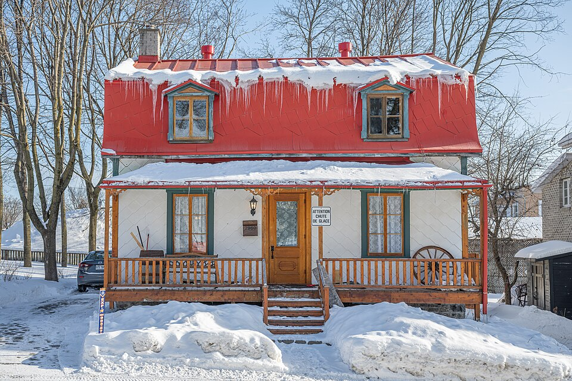

Mansard house La maison mansardée

"House in Charlesbourg, Quebec City 01" by Wilfredor, 9 February 2021, Wikimedia Commons, released CC0 (Creative Commons Zero, Public Domain Dedication) — licence read on the Commons API before download. File: https://commons.wikimedia.org/wiki/File:House_in_Charlesbourg,_Quebec_City_01.jpg
A rectangular plan that stretches longer than the houses before it, under a roof of gentle terrasson over an almost vertical brisis — two slopes usually, four or hipped sometimes. Symmetrical, vertically proportioned openings, occasionally arched, and ornament that can turn elaborate: decorative woodwork on the galleries, on the dormers and round the windows. Its materials are simply those of the neoclassical house it succeeds.
The plan traces the route explicitly: monumental Paris under Napoleon III, reintroducing a roof form of the French classical period; then Québec's institutional buildings and bourgeois houses; then convents and presbyteries; then, quickly, rural domestic architecture. Charlesbourg shows the whole chain in one place — the presbytery of 1875, the convent of 1883 and the sacristy of 1887 are all Second Empire, and the houses follow. The plan is also candid that some mansards here are retro-fits: a few old houses got one to make the attic habitable.
| Tenure / plan | single-family |
|---|---|
| Storeys | – |
| Roof form | mansard |
| Roof pitch | – |
| Window proportion | vertical |
| Principal cladding | wood-board-vertical, wood-clapboard, fieldstone-rendered, clay-brick |
| Roofing | as the neoclassical type — cedar shingle or traditional tin |
| Garage | – |
| Lot width | – |
| Front setback | – |
| Side setback | – |
| Front yard green | – |
What MCC says about this type
- Dans le dernier quart du XIXe siècle, un nouveau type de maison fait son apparition dans les paysages traditionnels, soit la maison mansardée issue du style Second Empire. Cette architecture trouve sa source dans l'architecture monumentale développée à Paris sous le règne de Napoléon III et qui réintroduit une forme de toit associée à la période classique française. D'abord réservé à l'architecture monumentale – bâtiments institutionnels et maisons bourgeoises –, le style Second Empire est ensuite popularisé dans l'architecture des couvents et des presbytères puis, rapidement, dans l'architecture domestique du milieu rural québécois. Le toit mansardé constitue la principale caractéristique de la maison mansardée ainsi que son plus grand avantage.
- Appears in the last quarter of the 19th century, and the plan's statistics show how far it spread — 27 of the site's 138 principal buildings, about 19 %, carry a mansard roof.
- Its earliest examples here favour the four-slope mansard, as on the former couvent des Soeurs du Bon-Pasteur; the two-slope version is used more from the turn of the 20th century.
- Rectangular plan, tending to lengthen relative to the individual houses of the preceding types.
- A mansard roof of gently pitched terrasson over a nearly vertical brisis, generally of two slopes, with four-slope and hipped variants.
- un plan rectangulaire qui tend à s'allonger par rapport aux maisons individuelles des types précédents
- un toit mansardé constitué d'un terrasson à pente douce et d'un brisis presque vertical. Ce toit est généralement à deux versants, mais il existe des variantes à quatre versants ou à croupes
- Sometimes elaborate ornament — decorative woodwork on galleries, on dormers and around the openings.
- une ornementation parfois élaborée, constituée notamment de boiseries décoratives sur les galeries, les lucarnes et autour des ouvertures
- Symmetrically disposed, sometimes arched, of vertical proportion; often wood casements with large panes.
- des ouvertures disposées symétriquement, parfois cintrées, aux proportions verticales. Ces fenêtres en bois sont souvent à battants à grands carreaux
- Made of the same materials as the Québec house of neoclassical inspiration.
- Elle est faite des mêmes matériaux que la maison québécoise d'inspiration néoclassique.
Transcribed from the plan de conservation's printed pp. 49–50. Materials are not itemised for this type: the plan simply refers them back to the neoclassical house, and the cladding list here repeats that record's rather than inventing one. The plan gives no storey count and no pitch. The siting column carries the plan's own built-fabric statistics for mansard roofs from printed pp. 45–46, which are counts for the whole site rather than for this residential type alone.
Same word elsewhere
- Rural house of French inspiration (Charlesbourg (Trait-Carré))
- Québec house of neoclassical inspiration (Charlesbourg (Trait-Carré))
- Cubic house (Four Square) (Charlesbourg (Trait-Carré))
- Industrial vernacular house (Charlesbourg (Trait-Carré))
- Central-gable house (maison à pignon central) (Gatineau)
- Complex gabled-roof house (maison à toit complexe à pignon) (Gatineau)
- Mansard-roofed house with gable wall on the façade (maison à toit mansardé avec mur pignon en façade) (Gatineau)
- One-and-a-half-storey wooden matchstick house (maison allumette en bois d'un étage et demi) (Gatineau)
- Wood matchstick house of two to two and a half storeys (maison allumette en bois de deux à deux étages et demi) (Gatineau)
- Brick matchbox house, two to two and a half storeys (maison allumette en brique de deux à deux étages et demi) (Gatineau)
- Cubic house (maison cubique) (Gatineau)
- CIP executive's house (maison de cadre de la CIP) (Gatineau)
- Flat-roofed wood house (maison en bois à toit plat) (Gatineau)
- Flat-roofed brick house (maison en brique à toit plat) (Gatineau)
- L-plan house with a two-slope (gable) roof (maison avec plan en L à toit à deux versants) (Gatineau)
- English-revival stone house (Hampstead)
- Postwar detached house (Hampstead)
- House of French inspiration (Île d'Orléans)
- Traditional Québec house of neoclassical influence (Île d'Orléans)
- Second Empire style and the mansard house (Île d'Orléans)
- Boomtown house (Île d'Orléans)
- Cubic house (Four Square) (Île d'Orléans)
- Franco-Québécois transitional house (Lévis)
- Québécois traditional house (Lévis)
- Neoclassical house (Lévis)
- Second Empire house (Lévis)
- Victorian house (Lévis)
- American vernacular house (Lévis)
- Beaux-Arts house (Lévis)
- Boomtown house (Lévis)
- Flat-roofed house (Lévis)
- Village house of Longue-Pointe (Mercier–Hochelaga-Maisonneuve (borough of Montréal))
- Company workers' house of the Hudon mill, rue Saint-Germain (Mercier–Hochelaga-Maisonneuve (borough of Montréal))
- Veterans' house, to the Wartime Housing Limited model (Mercier–Hochelaga-Maisonneuve (borough of Montréal))
- Garden City House (Town of Mount Royal)
- Faubourg House (Town of Mount Royal)
- Canadian House (Town of Mount Royal)
- New England House (Town of Mount Royal)
- Georgian House (Town of Mount Royal)
- English Manor House (Town of Mount Royal)
- Bungalow (Town of Mount Royal)
- Cottage (Town of Mount Royal)
- Split-Level (Town of Mount Royal)
- Prairie House (Town of Mount Royal)
- Semi-detached single-family house (Outremont (borough of Montréal))
- Detached single-family house (Outremont (borough of Montréal))
- Modern house on the flank (Outremont (borough of Montréal))
- Faubourg house (Le Plateau-Mont-Royal (borough of Montréal))
- Detached urban house (Le Plateau-Mont-Royal (borough of Montréal))
- Row urban house (Le Plateau-Mont-Royal (borough of Montréal))
- One-storey rural house of French inspiration (Québec City)
- Urban stone house of French inspiration (Québec City)
- Franco-Québécois transition house (Québec City)
- London-type terrace house (Québec City)
- Québécois neoclassical house (Québec City)
- Mansard-roofed house (Québec City)
- Rudimentary faubourg house (Québec City)
- Cubic house (Four Square) (Québec City)
- Flat-roofed faubourg house (Québec City)
- Neo-Queen Anne house (Québec City)
- Neo-Tudor house (Québec City)
- Arts and Crafts house (Québec City)
- Dutch Colonial Revival house (Québec City)
- Neo-Georgian house (Québec City)
- Maison shoebox (Rosemont–La Petite-Patrie (borough of Montréal))
- Detached house of the Cité-Jardin du Tricentenaire (Rosemont–La Petite-Patrie (borough of Montréal))
- Traditional French and Québécois house (Saint-Lambert)
- Mansard-roofed house of Second Empire influence (Saint-Lambert)
- Queen Anne style house (Saint-Lambert)
- Boomtown house with false mansard (Saint-Lambert)
- Boomtown house with crown (parapet or cornice) (Saint-Lambert)
- Cubic (Four Square) house (Saint-Lambert)
- House of Arts and Crafts influence (Saint-Lambert)
- The modern house (including the bungalow) (Saint-Lambert)
- Village house (Le Sud-Ouest (Montréal))
- Boomtown house (Le Sud-Ouest (Montréal))
- Urban house (Le Sud-Ouest (Montréal))
- Apartment house (Le Sud-Ouest (Montréal))
- Town house (post-1960 project housing) (Le Sud-Ouest (Montréal))
- Veterans' house (Le Sud-Ouest (Montréal))
- Lower-town company house (Ross and Macdonald, 1918–1923) (Témiscaming)
- Upper-district company house (Somerville, 1925–1950) (Témiscaming)
- Stone house in the French tradition (Vieux-Terrebonne)
- Maison cossue of rue Saint-Louis (Vieux-Terrebonne)
- Neoclassical Québécois stone house (Vieux-Terrebonne)
- Small-gabarit vernacular village house of the Bas-de-la-Côte (Vieux-Terrebonne)
- French-regime house in stone (colonial français) (Trois-Rivières)
- Well-to-do bourgeois house in stone and brick (maison cossue) (Trois-Rivières)
- Boomtown house (Trois-Rivières)
- Cubic house (Four-square) (Trois-Rivières)
- Arts & Crafts house (Trois-Rivières)
- Rural or village house (Villeray–Saint-Michel–Parc-Extension)
- Boomtown house (Villeray–Saint-Michel–Parc-Extension)
- Post-war house (Villeray–Saint-Michel–Parc-Extension)
- Post-war semi-detached house (Villeray–Saint-Michel–Parc-Extension)
- Picturesque villa and country house (Westmount)
- Greystone row house (Westmount)
- Mansard-roofed house of Second Empire influence (Westmount)
- Queen Anne house (Westmount)
- Richardsonian Romanesque house (Westmount)
- Semi-detached brick house (Westmount)
- Eclectic prestige house of the summit (Westmount)
- Tudor Revival house (Westmount)
- Arts and Crafts semi-detached house (Westmount)
- Interwar apartment house (Westmount)
Same form elsewhere
- Mansard-roofed house with gable wall on the façade (maison à toit mansardé avec mur pignon en façade) (Gatineau)
- Second Empire style and the mansard house (Île d'Orléans)
- Second Empire house (Lévis)
- Mansard-roofed house (Québec City)
- Mansard-roofed house of Second Empire influence (Saint-Lambert)
- Mansard-roofed house of Second Empire influence (Westmount)
Same period elsewhere
- Family A company houses (models A1–A8) (Arvida (borough of Jonquière, Saguenay))
- Family B company houses (models B1–B4) (Arvida (borough of Jonquière, Saguenay))
- Family C company houses (models C1–C6) (Arvida (borough of Jonquière, Saguenay))
- Family D company houses (models D1–D5) (Arvida (borough of Jonquière, Saguenay))
- Mixed-use building with a flat roof (édifice mixte à toit plat) (Gatineau)
- Side-gable duplex (duplex à mur pignon latéral) (Gatineau)
- Central-gable house (maison à pignon central) (Gatineau)
- Complex gabled-roof house (maison à toit complexe à pignon) (Gatineau)
- Mansard-roofed house with gable wall on the façade (maison à toit mansardé avec mur pignon en façade) (Gatineau)
- One-and-a-half-storey wooden matchstick house (maison allumette en bois d'un étage et demi) (Gatineau)
- Wood matchstick house of two to two and a half storeys (maison allumette en bois de deux à deux étages et demi) (Gatineau)
- Brick matchbox house, two to two and a half storeys (maison allumette en brique de deux à deux étages et demi) (Gatineau)
- Cubic house (maison cubique) (Gatineau)
- CIP executive's house (maison de cadre de la CIP) (Gatineau)
- Flat-roofed wood house (maison en bois à toit plat) (Gatineau)
- Flat-roofed brick house (maison en brique à toit plat) (Gatineau)
- L-plan house with a two-slope (gable) roof (maison avec plan en L à toit à deux versants) (Gatineau)
- English-revival stone house (Hampstead)
- Regency cottage (Île d'Orléans)
- Second Empire style and the mansard house (Île d'Orléans)
- Victorian eclecticism (Île d'Orléans)
- American vernacular cottage (Île d'Orléans)
- Arts and Crafts architecture (Île d'Orléans)
- Boomtown house (Île d'Orléans)
- Cubic house (Four Square) (Île d'Orléans)
- Modernism (Île d'Orléans)
- Québec regionalism (Île d'Orléans)
- Second Empire house (Lévis)
- Victorian house (Lévis)
- American vernacular house (Lévis)
- Mixed-use or commercial building (Lévis)
- Beaux-Arts house (Lévis)
- Boomtown house (Lévis)
- Cubic house (maison cubique) (Lévis)
- Flat-roofed house (Lévis)
- Arts & Crafts house (Arts & métiers) (Lévis)
- Company workers' house of the Hudon mill, rue Saint-Germain (Mercier–Hochelaga-Maisonneuve (borough of Montréal))
- Bourgeois residence of the cité, Beaux-Arts (Mercier–Hochelaga-Maisonneuve (borough of Montréal))
- Shop-and-dwellings block on the commercial artery (Mercier–Hochelaga-Maisonneuve (borough of Montréal))
- Three-storey workers' plex (Mercier–Hochelaga-Maisonneuve (borough of Montréal))
- Garden City House (Town of Mount Royal)
- Faubourg House (Town of Mount Royal)
- Faubourg Apartment Block (Town of Mount Royal)
- Canadian House (Town of Mount Royal)
- New England House (Town of Mount Royal)
- New England Apartment Block (Town of Mount Royal)
- Georgian House (Town of Mount Royal)
- English Manor House (Town of Mount Royal)
- Semi-detached single-family house (Outremont (borough of Montréal))
- Semi-detached duplex (Outremont (borough of Montréal))
- Detached single-family house (Outremont (borough of Montréal))
- Opulent detached residence (Outremont (borough of Montréal))
- Faubourg house (Le Plateau-Mont-Royal (borough of Montréal))
- Detached urban house (Le Plateau-Mont-Royal (borough of Montréal))
- Duplex without front setback (Le Plateau-Mont-Royal (borough of Montréal))
- Duplex with front setback (Le Plateau-Mont-Royal (borough of Montréal))
- Duplex with exterior stair (Le Plateau-Mont-Royal (borough of Montréal))
- Triplex with interior stair (Le Plateau-Mont-Royal (borough of Montréal))
- Triplex with exterior stair (Le Plateau-Mont-Royal (borough of Montréal))
- Multiplex (Le Plateau-Mont-Royal (borough of Montréal))
- Row urban house (Le Plateau-Mont-Royal (borough of Montréal))
- Apartment block without courtyard (Le Plateau-Mont-Royal (borough of Montréal))
- Apartment block with courtyard (Le Plateau-Mont-Royal (borough of Montréal))
- Small apartment building (Le Plateau-Mont-Royal (borough of Montréal))
- Neo-Gothic house, villa or cottage (Québec City)
- Québécois neoclassical house (Québec City)
- Regency cottage (Québec City)
- Regency villa (Québec City)
- Mansard-roofed house (Québec City)
- Rudimentary faubourg house (Québec City)
- Boomtown house and shop-house (Québec City)
- Cubic house (Four Square) (Québec City)
- Flat-roofed faubourg house (Québec City)
- Industrial-vernacular cottage (Québec City)
- Neo-Queen Anne house (Québec City)
- Neo-Renaissance house and mixed-use block (Québec City)
- Neo-Tudor house (Québec City)
- Plex — superposed dwellings (Québec City)
- Apartment block with a central stairwell (Québec City)
- Arts and Crafts house (Québec City)
- Bungalow (Québec City)
- Camp and villégiature chalet (Québec City)
- Dutch Colonial Revival house (Québec City)
- International Style house (residential) (Québec City)
- Neo-Georgian house (Québec City)
- Prairie house (Frank Lloyd Wright inspiration) (Québec City)
- Wartime Housing house (Cape Cod) (Québec City)
- Maison shoebox (Rosemont–La Petite-Patrie (borough of Montréal))
- Triplex with exterior stair (Rosemont–La Petite-Patrie (borough of Montréal))
- Duplex with exterior stair (Rosemont–La Petite-Patrie (borough of Montréal))
- Duplex with interior stair and paired entrances (Rosemont–La Petite-Patrie (borough of Montréal))
- Conciergerie (Rosemont–La Petite-Patrie (borough of Montréal))
- Mansard-roofed house of Second Empire influence (Saint-Lambert)
- Queen Anne style house (Saint-Lambert)
- Boomtown house with false mansard (Saint-Lambert)
- Boomtown house with crown (parapet or cornice) (Saint-Lambert)
- Cubic (Four Square) house (Saint-Lambert)
- House of Arts and Crafts influence (Saint-Lambert)
- Multi-dwelling building of plex type (Saint-Lambert)
- The "King Cottage" (Saint-Lambert)
- Boomtown house (Le Sud-Ouest (Montréal))
- Duplex with interior stair (Le Sud-Ouest (Montréal))
- Three-storey duplex (Le Sud-Ouest (Montréal))
- Triplex with interior stair (Le Sud-Ouest (Montréal))
- Urban house (Le Sud-Ouest (Montréal))
- Apartment house (Le Sud-Ouest (Montréal))
- Duplex with exterior stair (Le Sud-Ouest (Montréal))
- Multiplex (Le Sud-Ouest (Montréal))
- Raised duplex (Le Sud-Ouest (Montréal))
- Triplex with exterior stair (Le Sud-Ouest (Montréal))
- Lower-town company house (Ross and Macdonald, 1918–1923) (Témiscaming)
- Upper-district company house (Somerville, 1925–1950) (Témiscaming)
- Maison cossue of rue Saint-Louis (Vieux-Terrebonne)
- Neoclassical Québécois stone house (Vieux-Terrebonne)
- Small-gabarit vernacular village house of the Bas-de-la-Côte (Vieux-Terrebonne)
- Well-to-do bourgeois house in stone and brick (maison cossue) (Trois-Rivières)
- The 1908 reconstruction block — brick, flat-roofed, built all at once (Trois-Rivières)
- Boomtown house (Trois-Rivières)
- Immeuble à logements — the plex of superposed flats (Trois-Rivières)
- Cubic house (Four-square) (Trois-Rivières)
- Arts & Crafts house (Trois-Rivières)
- Three-storey plex with exterior stair (Verdun (borough of Montréal))
- Two semi-detached duplexes, or a three-dwelling building, with deep front balconies (Verdun (borough of Montréal))
- Three-storey commercial block with dwellings above and alcove balconies (Verdun (borough of Montréal))
- National Housing Act house — 1½ storeys, brick, to prize-winning plans (Verdun (borough of Montréal))
- Rural or village house (Villeray–Saint-Michel–Parc-Extension)
- Shoebox of the early 20th century (Villeray–Saint-Michel–Parc-Extension)
- Boomtown house (Villeray–Saint-Michel–Parc-Extension)
- Plex of the early 20th century (Villeray–Saint-Michel–Parc-Extension)
- Apartment building of the early 20th century — the conciergerie (Villeray–Saint-Michel–Parc-Extension)
- Picturesque villa and country house (Westmount)
- Greystone row house (Westmount)
- Greystone triplex with exterior stair (Westmount)
- Mansard-roofed house of Second Empire influence (Westmount)
- Queen Anne house (Westmount)
- Richardsonian Romanesque house (Westmount)
- Semi-detached brick house (Westmount)
- Eclectic prestige house of the summit (Westmount)
- Tudor Revival house (Westmount)
- Arts and Crafts semi-detached house (Westmount)
- Interwar apartment house (Westmount)
Same style elsewhere
- Mansard-roofed house with gable wall on the façade (maison à toit mansardé avec mur pignon en façade) (Gatineau)
- Second Empire style and the mansard house (Île d'Orléans)
- Second Empire house (Lévis)
- Detached urban house (Le Plateau-Mont-Royal (borough of Montréal))
- Duplex with front setback (Le Plateau-Mont-Royal (borough of Montréal))
- Row urban house (Le Plateau-Mont-Royal (borough of Montréal))
- Mansard-roofed house (Québec City)
- Mansard-roofed house of Second Empire influence (Saint-Lambert)
- Boomtown house with false mansard (Saint-Lambert)
- Three-storey duplex (Le Sud-Ouest (Montréal))
- Urban house (Le Sud-Ouest (Montréal))
- Maison cossue of rue Saint-Louis (Vieux-Terrebonne)
- Well-to-do bourgeois house in stone and brick (maison cossue) (Trois-Rivières)
- The 1908 reconstruction block — brick, flat-roofed, built all at once (Trois-Rivières)
- Rural or village house (Villeray–Saint-Michel–Parc-Extension)
- Greystone row house (Westmount)
- Mansard-roofed house of Second Empire influence (Westmount)